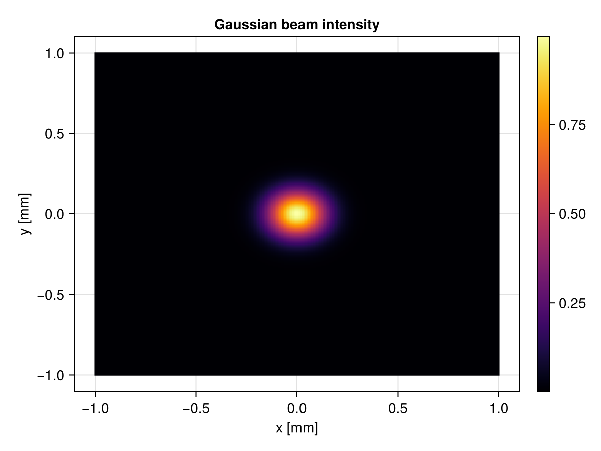
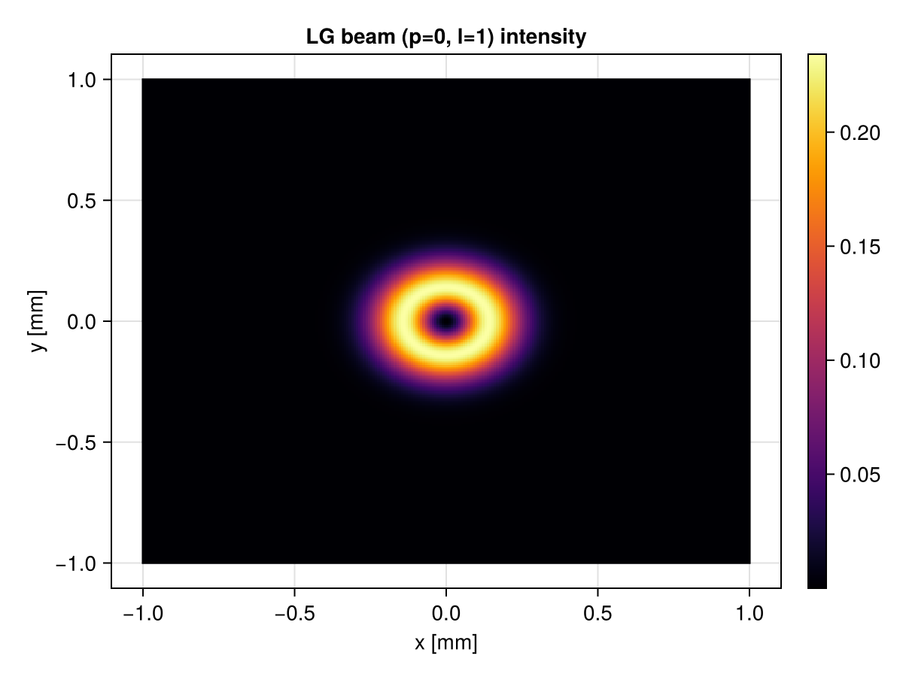

Examples
Gaussian Beams
using Optikos
using CairoMakie
grid = TransverseGrid(range(-1e-3, 1e-3, 256), range(-1e-3, 1e-3, 256))
beam = GaussianBeam(200e-6, 632.8e-9)
field = evaluate(grid, beam)
fig, ax, hm = fieldplot(grid, beam, units=:mm)
ax.xlabel = "x [mm]"
ax.ylabel = "y [mm]"
ax.title = "Gaussian beam intensity"
Colorbar(fig[1,2], hm)
fig
Laguerre-Gaussian Beams
using Optikos
using CairoMakie
grid = TransverseGrid(range(-1e-3, 1e-3, 256), range(-1e-3, 1e-3, 256))
beam = LGBeam(200e-6, 632.8e-9, 0, 1)
field = evaluate(grid, beam)
fig, ax, hm = fieldplot(field, units=:mm)
ax.xlabel = "x [mm]"
ax.ylabel = "y [mm]"
ax.title = "LG beam (p=0, l=1) intensity"
Colorbar(fig[1,2], hm)
fig
Experimental setups
Optikos.mixing_experiment — Function
mixing_experiment(grid, source, system1, system2, mixer, z;
n_realizations=500) -> Matrix{ComplexF64}Monte Carlo simulation of a two-arm nonlinear mixing experiment using a single spatially partially coherent source.
The source is sampled once per realization and the resulting field is shared between both arms — physically corresponding to a beam splitter. Each arm then propagates through its respective optical system before being mixed in the nonlinear crystal.
For example, with system2 containing a ConjugateInverter and an SFGCrystal as mixer, the output is:
\[\langle E(\mathbf{r}) E^*(-\mathbf{r}) \rangle = W(\mathbf{r}, -\mathbf{r})\]
Arguments
grid: sampling grid at the source planesource: the partially coherent sourcesystem1: optical system for arm 1system2: optical system for arm 2system3: optical system for arm 3mixer: nonlinear mixing element (e.g.SFGCrystal)z: Distance to first elementn_realizations: number of Monte Carlo realizations
mixing_experiment(grid, beam, system1, system2, mixer, z;
n_realizations=500) -> Matrix{ComplexF64}Monte Carlo simulation of a two-arm nonlinear mixing experiment using a single spatially partially coherent source.
The source is sampled once per realization and the resulting field is shared between both arms — physically corresponding to a beam splitter. Each arm then propagates through its respective optical system before being mixed in the nonlinear crystal.
For example, with system2 containing a ConjugateInverter and an SFGCrystal as mixer, the output is:
\[\langle E(\mathbf{r}) E^*(-\mathbf{r}) \rangle = W(\mathbf{r}, -\mathbf{r})\]
Arguments
grid: sampling grid at the source planebeamtype: the beam typeradius: disk source radiussystem1: optical system for arm 1system2: optical system for arm 2system3: optical system for arm 3mixer: nonlinear mixing element (e.g.SFGCrystal)z: Distance to first elementn_realizations: number of Monte Carlo realizations